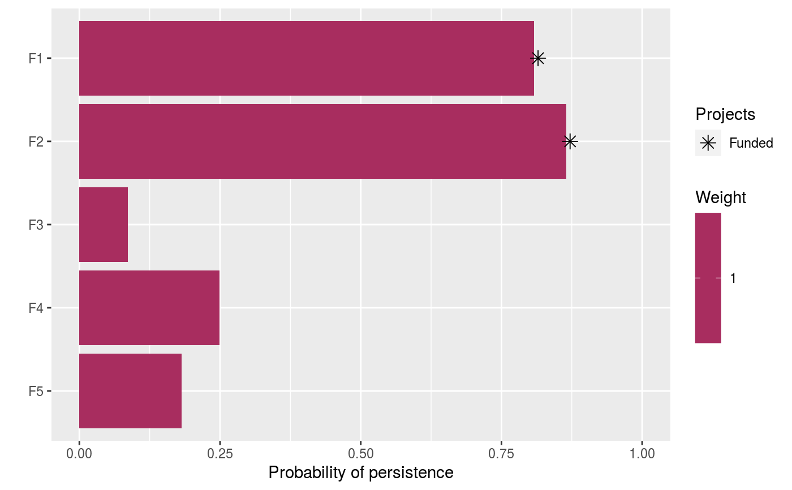

Specify that solutions should be generated using a backwards step-wise
heuristic algorithm (inspired by Cabeza et al. 2004,
Korte & Vygen 2000). Ideally,
solutions should be generated using exact algorithm solvers (e.g.
add_rsymphony_solver or add_gurobi_solver)
because they can guaranteably identify optimal solutions (Rodrigues & Gaston
2002).
add_heuristic_solver(x, number_solutions = 1, verbose = TRUE)
| x |
|
|---|---|
| number_solutions |
|
| verbose |
|
ProjectProblem-class object with the solver added
to it.
The specific algorithm used to generate solutions depends on the
the objective specified for the project prioritization
problem.
For objectives which maximize benefit subject to budgetary constraints
(e.g. add_max_richness_objective):
All actions are initially selected for funding (excepting actions which are locked out).
The next step is repeated until (i) the number of desired solutions is obtained and (ii) the total cost of the remaining actions that are selected for funding is within the budget.
Each of the remaining actions that are currently selected for funding (excepting actions which are locked in or actions which have zero cost) are evaluated according to how much the performance of the solution decreases when the action is deselected for funding, relative to the cost of the action. This can be expressed mathematically as:
$$B_l = \frac{V(L) - V(L - l)}{C_l}$$
Where \(L\) is the set of remaining actions currently selected for funding (indexed by \(l\)), \(B_l\) is the benefit associated with funding action \(l\), \(V(L)\) is the objective value associated with the solution where all remaining actions are funded, \(V(L - l)\) is the objective value associated with the solution where all remaining actions except for the action \(l\) are funded, and \(C_l\) is the cost of action \(l\).
The action with the smallest benefit (i.e. \(B_l\) value) is then deselected for funding.
For objectives which minimize cost subject to biodiversity constraints
(i.e. add_min_set_objective):
All actions are initially selected for funding (excepting actions which are locked out).
The next step is repeated until (i) the number of desired solutions is obtained or (ii) no action can be deselected for funding without the probability of any feature expecting to persist falling below its target probability of persistence.
Each of the remaining actions that are currently selected for funding (excepting actions which are locked in or actions which have zero cost) are evaluated according to how much the performance of the solution decreases when the action is deselected for funding, relative to the cost of the action. This can be expressed mathematically as:
$$B_l = \frac{\big(\sum_{f}^{F} P_f(L) - T_f \big) - \big( \sum_{f}^{F} P_f(L - l) - T_f \big)}{C_l}$$
Where \(F\) is the set of features (indexed by \(f\)), \(T_f\) is the target for feature \(f\), \(L\) is the set of selected for funding (indexed by \(l\)), \(C_l\) is the cost of action \(l\), \(B_l\) is the benefit associated with funding action \(l\), \(P(L)\) is probability that each feature is expected to persist when the remaining actions (\(L\)) are funded, and \(P(L - l)\) is the probability that each feature is expected to persist when all the remaining actions except for action \(l\) are funded.
The action with the smallest benefit (i.e. \(B_l\) value) is then deselected for funding.
Rodrigues AS & Gaston KJ (2002) Optimisation in reserve selection procedures---why not? Biological Conservation, 107, 123--129.
Cabeza M, Araujo MB, Wilson RJ, Thomas CD, Cowley MJ & Moilanen A (2004) Combining probabilities of occurrence with spatial reserve design. Journal of Applied Ecology, 41, 252--262.
Korte B & Vygen J (2000) Combinatorial Optimization. Theory and Algorithms. Springer-Verlag, Berlin, Germany.
solvers.
# load ggplot2 package for making plots library(ggplot2) # load data data(sim_projects, sim_features, sim_actions) # build problem with heuristic solver and $200 p1 <- problem(sim_projects, sim_actions, sim_features, "name", "success", "name", "cost", "name") %>% add_max_richness_objective(budget = 200) %>% add_binary_decisions() %>% add_heuristic_solver() # print problem print(p1)#> #> #> #> #> #> #> #> #> #> #> #>#> # A tibble: 1 x 21 #> solution status obj cost F1_action F2_action F3_action F4_action F5_action #> <int> <chr> <dbl> <dbl> <dbl> <dbl> <dbl> <dbl> <dbl> #> 1 1 NA 2.19 195. 1 1 0 0 0 #> # ... with 12 more variables: baseline_action <dbl>, F1_project <dbl>, #> # F2_project <dbl>, F3_project <dbl>, F4_project <dbl>, F5_project <dbl>, #> # baseline_project <dbl>, F1 <dbl>, F2 <dbl>, F3 <dbl>, F4 <dbl>, F5 <dbl>